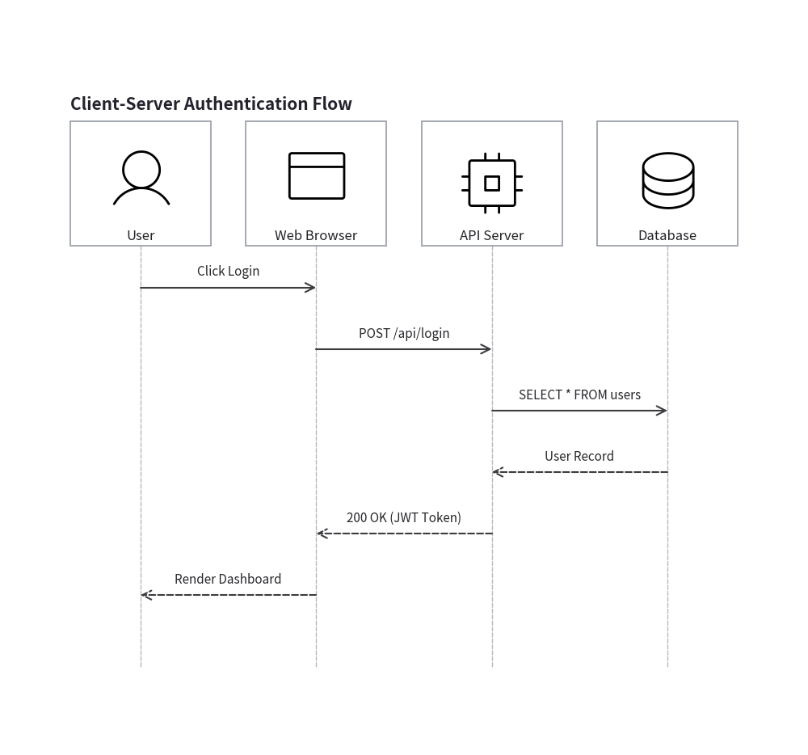
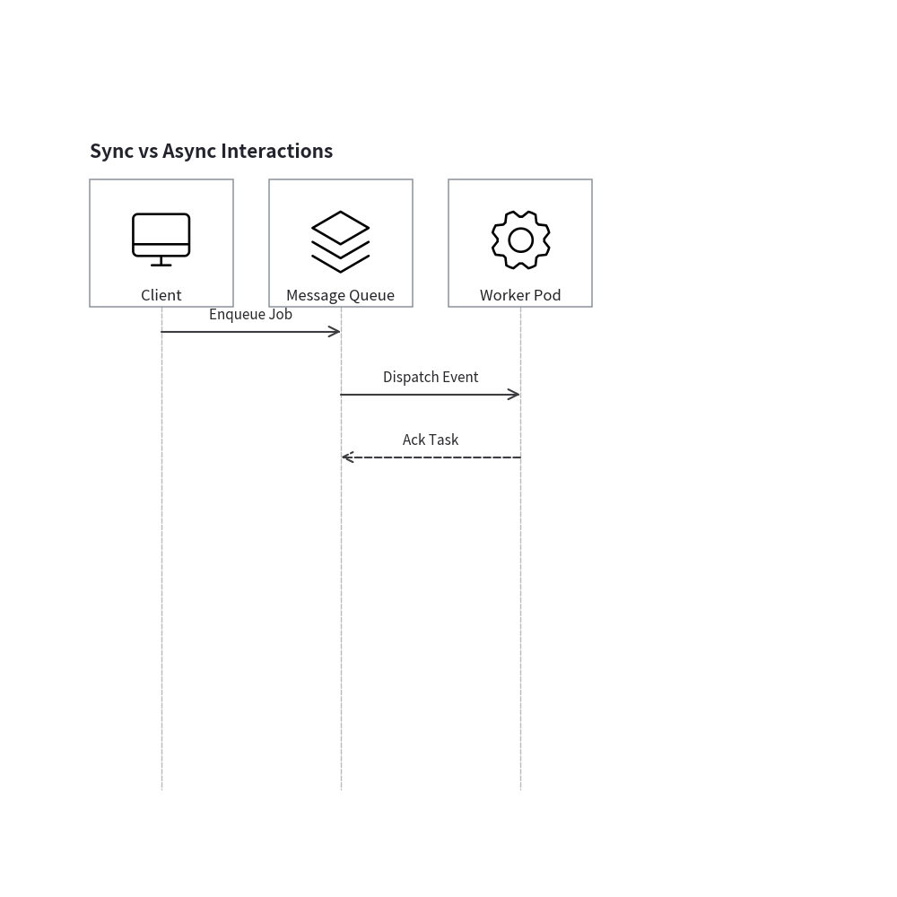
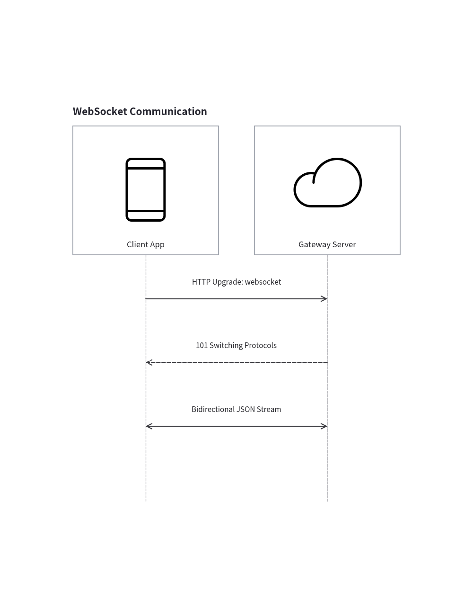
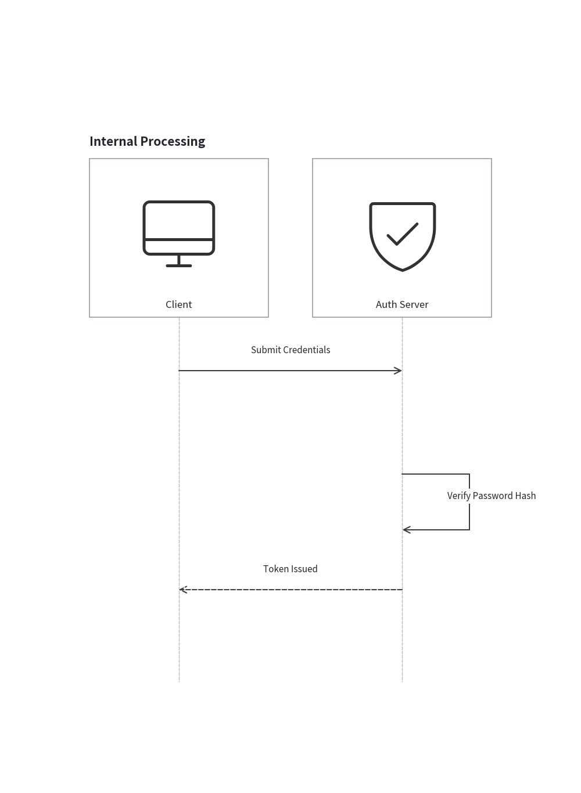
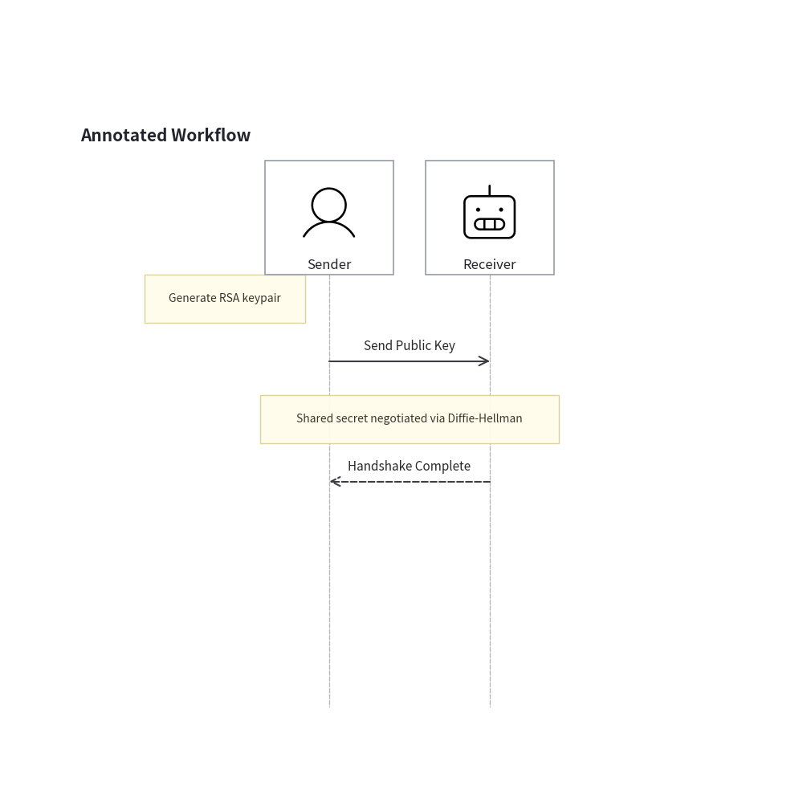
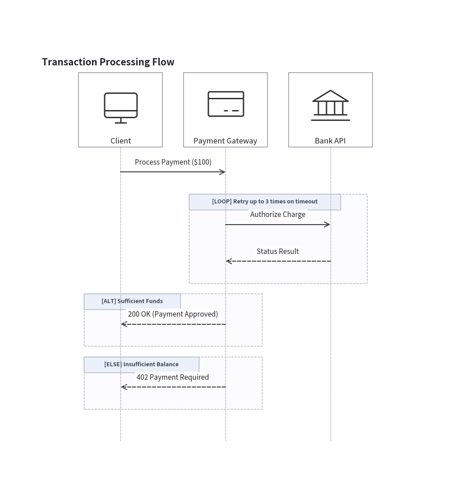
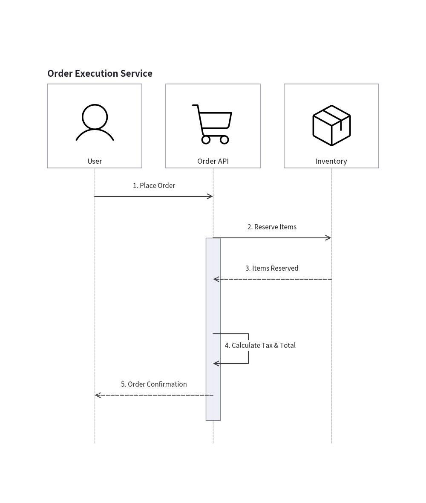
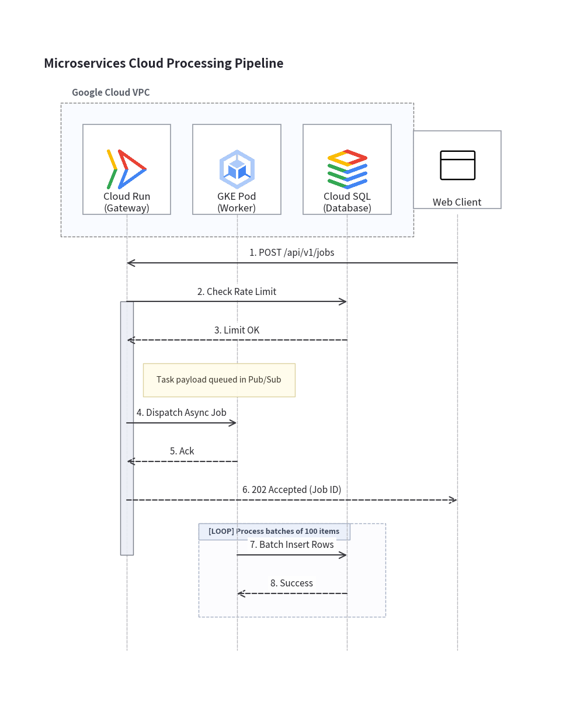

Sequence Diagrams
drawlib.diagrams.sequence provides a declarative, pure-Python sequence diagramming framework.
Unlike external text-to-diagram engines that rely on cryptic ASCII notation (->>, -->>, -)), Drawlib gives you clean, Pythonic method verbs (request(), reply(), connect()), automatic top-to-bottom timeline pacing, structured condition blocks via Python with statements, and seamless integration with Drawlib's vector canvas and icon ecosystems.
1. Core Concepts
Sequence diagrams consist of 6 primary building blocks:
| Component | Class | Description |
|---|---|---|
| Container | SequenceDiagram |
Manages participant lifelines, chronological timeline steps, auto-layout, and rendering. |
| Participant | Participant |
An actor, microservice, or system component with a vertical lifeline. |
| Message | Message |
A horizontal interaction arrow (request(), reply(), connect(), or self-call). |
| Annotation | Note |
A sticky callout card placed beside a lifeline or spanning across multiple participants. |
| Frame Block | Block |
A boundary box for condition branches (alt / else_), loops (loop), or optionals (opt). |
| Group Box | ParticipantGroup |
A header clustering box enclosing a group of participant cards (e.g. box "Internal VPC"). |
2. Quick Start: Request & Reply
In Drawlib, message semantics are expressed through clear grammatical verbs:
a.request(b, label): Synchronous call or invocation (solid line with arrow―▶).b.reply(a, label): Response or return value (dashed line with arrow---▶).
from drawlib import canvas
from drawlib.diagrams.sequence import SequenceDiagram, Participant, PhosphorIcon
canvas.initialize()
canvas.setup(width=92, height=86)
d = SequenceDiagram(title="Client-Server Authentication Flow")
user = d.add(Participant("User", icon=PhosphorIcon.USER, icon_size=8.0))
client = d.add(Participant("Web Browser", icon=PhosphorIcon.BROWSER, icon_size=8.0))
server = d.add(Participant("API Server", icon=PhosphorIcon.CPU, icon_size=8.0))
db = d.add(Participant("Database", icon=PhosphorIcon.DATABASE, icon_size=8.0))
# 1. User initiates login
user.request(client, "Click Login")
client.request(server, "POST /api/login")
# 2. Server queries DB and returns response
server.request(db, "SELECT * FROM users")
db.reply(server, "User Record")
# 3. Server returns JWT and client updates view
server.reply(client, "200 OK (JWT Token)")
client.reply(user, "Render Dashboard")
d.draw(xy=(3.0, 3.0))

3. Message Types and Arrows
3.1 Synchronous vs Asynchronous
You can specify is_async=True to indicate non-blocking, asynchronous events (such as event streaming or queue worker dispatches). Asynchronous messages are rendered with open stick arrowheads (―> or --->):
from drawlib import canvas
from drawlib.diagrams.sequence import SequenceDiagram, Participant, PhosphorIcon
canvas.initialize()
canvas.setup(width=72, height=65)
d = SequenceDiagram(title="Sync vs Async Interactions")
client = d.add(Participant("Client", icon=PhosphorIcon.DESKTOP, icon_size=8.0))
queue = d.add(Participant("Message Queue", icon=PhosphorIcon.STACK, icon_size=8.0))
worker = d.add(Participant("Worker Pod", icon=PhosphorIcon.GEAR, icon_size=8.0))
# Synchronous request (solid filled arrow)
client.request(queue, "Enqueue Job")
# Asynchronous dispatch (solid open stick arrow)
queue.request(worker, "Dispatch Event", is_async=True)
# Asynchronous acknowledgment (dashed open stick arrow)
worker.reply(queue, "Ack Task", is_async=True)
d.draw(xy=(3.0, 3.0))

3.2 Bidirectional Connections (<->)
When two entities establish a persistent, two-way communication channel (e.g. WebSocket connection, bidirectional gRPC stream, or keep-alive synchronization) without drawing redundant round trips, use a.connect(b, arrow="<->"):
from drawlib import canvas
from drawlib.diagrams.sequence import SequenceDiagram, Participant, PhosphorIcon
canvas.initialize()
canvas.setup(width=52, height=65)
d = SequenceDiagram(title="WebSocket Communication")
client = d.add(Participant("Client App", icon=PhosphorIcon.DEVICE_MOBILE, icon_size=8.0))
server = d.add(Participant("Gateway Server", icon=PhosphorIcon.CLOUD, icon_size=8.0))
client.request(server, "HTTP Upgrade: websocket")
server.reply(client, "101 Switching Protocols")
# Bidirectional persistent communication
client.connect(server, "Bidirectional JSON Stream", arrow="<->")
d.draw(xy=(3.0, 3.0))

3.3 Self-Calls (Internal Processing)
When a participant calls itself (p.request(p, label)), Drawlib automatically routes the message as an orthogonal 3-segment loop returning to the same lifeline:
from drawlib import canvas
from drawlib.diagrams.sequence import SequenceDiagram, Participant, PhosphorIcon
canvas.initialize()
canvas.setup(width=52, height=71)
d = SequenceDiagram(title="Internal Processing")
client = d.add(Participant("Client", icon=PhosphorIcon.DESKTOP, icon_size=8.0))
auth = d.add(Participant("Auth Server", icon=PhosphorIcon.SHIELD_CHECK, icon_size=8.0))
client.request(auth, "Submit Credentials")
# Self-call loop
auth.request(auth, "Verify Password Hash")
auth.reply(client, "Token Issued")
d.draw(xy=(3.0, 3.0))

4. Sticky Note Annotations (Note)
Notes provide informative context alongside lifelines or across multiple participants:
p.note("...", pos="right")(default): Placed to the right of the participant's lifeline.p.note("...", pos="left"): Placed to the left of the participant's lifeline.d.note("...", over=[p1, p2]): Spans centered across multiple lifelines.
from drawlib import canvas
from drawlib.diagrams.sequence import SequenceDiagram, Participant, PhosphorIcon
canvas.initialize()
canvas.setup(width=75, height=74)
d = SequenceDiagram(title="Annotated Workflow")
sender = d.add(Participant("Sender", icon=PhosphorIcon.USER, icon_size=8.0))
receiver = d.add(Participant("Receiver", icon=PhosphorIcon.ROBOT, icon_size=8.0))
# Note on single participant
sender.note("Generate RSA keypair", pos="left")
sender.request(receiver, "Send Public Key")
# Note across multiple participants
d.note("Shared secret negotiated via Diffie-Hellman", over=[sender, receiver])
receiver.reply(sender, "Handshake Complete")
d.draw(xy=(3.0, 3.0))

5. Structured Frames (Block with Python with)
Conditional logic, alternative flows, and loops are defined naturally using Python's with statement. The code indentation mirrors the nested boundary frames in the rendered diagram:
with d.loop("Condition"):: Loop / repeated sequence.with d.alt("Condition A"):andwith d.else_("Condition B"):: Alternative branches.with d.opt("Condition"):: Optional execution block.with d.par("Description"):: Parallel concurrent steps.
from drawlib import canvas
from drawlib.diagrams.sequence import SequenceDiagram, Participant, PhosphorIcon
canvas.initialize()
canvas.setup(width=86, height=94)
d = SequenceDiagram(title="Transaction Processing Flow")
client = d.add(Participant("Client", icon=PhosphorIcon.DESKTOP, icon_size=8.0))
gateway = d.add(Participant("Payment Gateway", icon=PhosphorIcon.CREDIT_CARD, icon_size=8.0))
bank = d.add(Participant("Bank API", icon=PhosphorIcon.BANK, icon_size=8.0))
client.request(gateway, "Process Payment ($100)")
with d.loop("Retry up to 3 times on timeout"):
gateway.request(bank, "Authorize Charge")
bank.reply(gateway, "Status Result")
with d.alt("Sufficient Funds"):
gateway.reply(client, "200 OK (Payment Approved)")
with d.else_("Insufficient Balance"):
gateway.reply(client, "402 Payment Required")
d.draw(xy=(3.0, 3.0))

6. Activation Bars and Autonumbering
6.1 Activation Bars (activate() / deactivate())
You can visually highlight when an entity is actively executing by calling p.activate() and p.deactivate(). Drawlib draws a slender execution rectangle along the lifeline during the active span.
6.2 Autonumbering (autonumber=True)
Setting autonumber=True on SequenceDiagram automatically prepends sequential numbers (1., 2., 3., ...) to all message labels in chronological order.
from drawlib import canvas
from drawlib.diagrams.sequence import SequenceDiagram, Participant, PhosphorIcon
canvas.initialize()
canvas.setup(width=72, height=85)
d = SequenceDiagram(title="Order Execution Service", autonumber=True)
user = d.add(Participant("User", icon=PhosphorIcon.USER, icon_size=8.0))
app = d.add(Participant("Order API", icon=PhosphorIcon.SHOPPING_CART, icon_size=8.0))
inventory = d.add(Participant("Inventory", icon=PhosphorIcon.PACKAGE, icon_size=8.0))
user.request(app, "Place Order")
# App begins active processing
app.activate()
app.request(inventory, "Reserve Items")
inventory.reply(app, "Items Reserved")
app.request(app, "Calculate Tax & Total")
app.reply(user, "Order Confirmation")
app.deactivate()
d.draw(xy=(3.0, 3.0))

7. Complete Microservices Architecture Example
Here is a full production example combining participant groups (ParticipantGroup), GCP icons, sticky notes, conditional branches, and custom styling:
from drawlib import canvas
from drawlib.colors import Colors
from drawlib.diagrams.sequence import SequenceDiagram, GcpIcon, Participant, ParticipantGroup, PhosphorIcon
from drawlib.types import Style
canvas.initialize()
canvas.setup(width=106, height=128)
d = SequenceDiagram(title="Microservices Cloud Processing Pipeline", autonumber=True)
# Participant boundary group for internal cluster
backend = d.add_group(
ParticipantGroup(
title="Google Cloud VPC",
padding=4.0,
style=Style(
shape_fill_color=(242, 246, 255, 0.4),
shape_line_color=Colors.Gray,
shape_line_style="dashed",
),
)
)
api = backend.add(Participant("Cloud Run\n(Gateway)", icon=GcpIcon.CLOUD_RUN, icon_size=8.0))
worker = backend.add(Participant("GKE Pod\n(Worker)", icon=GcpIcon.GOOGLE_KUBERNETES_ENGINE, icon_size=8.0))
db = backend.add(Participant("Cloud SQL\n(Database)", icon=GcpIcon.CLOUD_SQL, icon_size=8.0))
# External client
client = d.add(Participant("Web Client", icon=PhosphorIcon.BROWSER, icon_size=8.0))
# Request flow
client.request(api, "POST /api/v1/jobs")
api.activate()
api.request(db, "Check Rate Limit")
db.reply(api, "Limit OK")
api.note("Task payload queued in Pub/Sub", pos="right")
api.request(worker, "Dispatch Async Job", is_async=True)
worker.reply(api, "Ack", is_async=True)
api.reply(client, "202 Accepted (Job ID)")
api.deactivate()
# Worker processing inside loop
with d.loop("Process batches of 100 items"):
worker.request(db, "Batch Insert Rows")
db.reply(worker, "Success")
d.draw(xy=(3.0, 3.0))

© 2026 drawlib by Yuichi Ito. Released under the Apache 2.0 License.